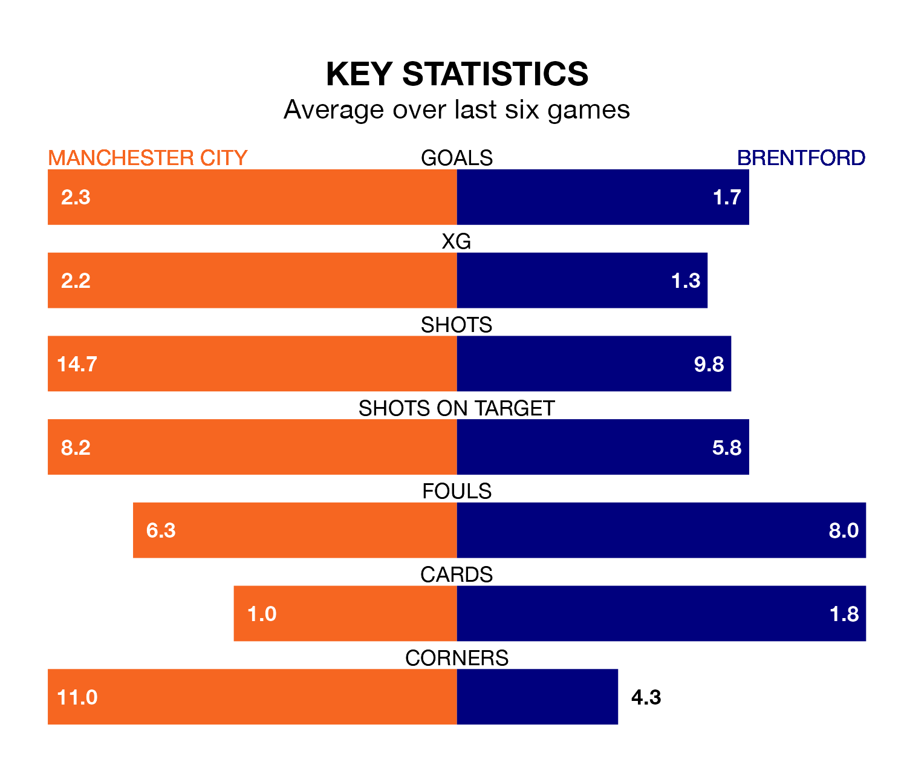

Manchester City are heavy favourites to keep all three points at home in Tuesday's late kick-off against Brentford.
The Citizens, who sit third in the Premier League with 24 games played, are priced at 1.2 to seal victory at the Etihad Stadium.
Sitting 12 places and 28 points behind them in the table, Brentford are 11.0 to win with *Betting Company*, while the draw is at 6.5.
With 57 goals in 24 games so far this season, City are the league's third-highest scorers with 2.4 goals per game. And they are conceding fewer than average, letting in 26 goals at a rate of 1.1 per game.
Brentford, meanwhile, are below average scorers, with 1.5 goals per game, compared to a league average of 1.6. They have conceded 1.8 goals per game.
In Erling Haaland, the Citizens have the league's most on-form striker so far this season. He has notched 16 goals in 19 appearances.
His goal rate of one every 99 minutes is quicker than that of Bryan Mbeumo, the Bees's top scorer with a goal every 184 minutes, and a total of seven goals in 15 games.
The home team are in fantastic form in the Premier League, with five wins and a draw from their last six games.
With two wins and four losses over that period, the visitors' form is much worse – they have taken six points from 18, compared to City's 16.
In the last five years, City and Brentford have played each other on five occasions. City won three of them and Brentford two.
On average, the Citizens scored 1.4 goals and the Bees 0.8 in those matches.
Their last meeting was on February 5, when City won 3-1 away.
City's last match was on Saturday, a 1-1 draw against Chelsea, with Rodri getting the goal for the Citizens.
Brentford lost 4-1 against Liverpool last time out, also on Saturday, with Ivan Toney on the scoresheet.
Tuesday's match will be refereed by Darren England, who has taken charge of five Premier League games so far this season, issuing no red cards and booking 26 players. He has awarded one penalty.
The last Brentford game England refereed was the 3-2 win at home against Nottingham Forest on January 20. He is yet to oversee a match featuring City this season.
Updated: 12:18 (UTC), 19/02/24